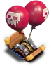
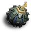
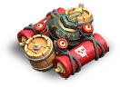
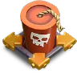
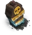
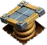
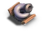

Clash of Clans Traps
Updated: 26 August 2026 · By the Goblins Farm team
Every Home Village trap, 8 in total, with what each one triggers on and the full level table, read from the game files.
Traps

Air Bomb13 levels, from TH5
Bomb14 levels, from TH3
Giant Bomb12 levels, from TH6
Giga Bomb4 levels, from TH17 Seeking Air Mine8 levels, from TH7
Skeleton Trap5 levels, from TH8
Spring Trap13 levels, from TH4
Tornado Trap3 levels, from TH11Goblins Farm is not affiliated with, endorsed by, sponsored by, or specifically approved by Supercell. Clash of Clans is a trademark of Supercell Oy. This material is unofficial fan content produced under Supercell's Fan Content Policy. Game values change with every update; always verify in-game before committing an upgrade.